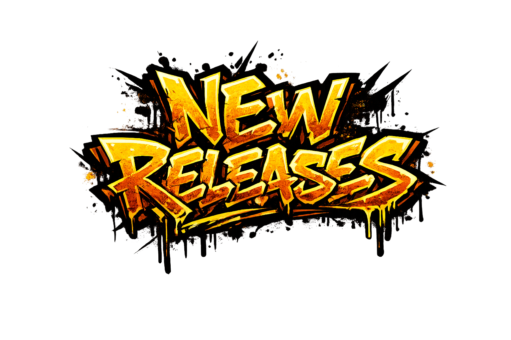
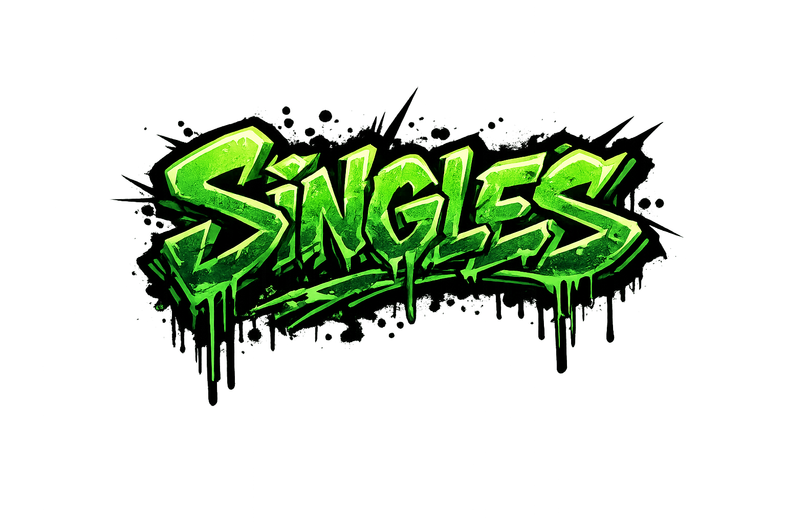
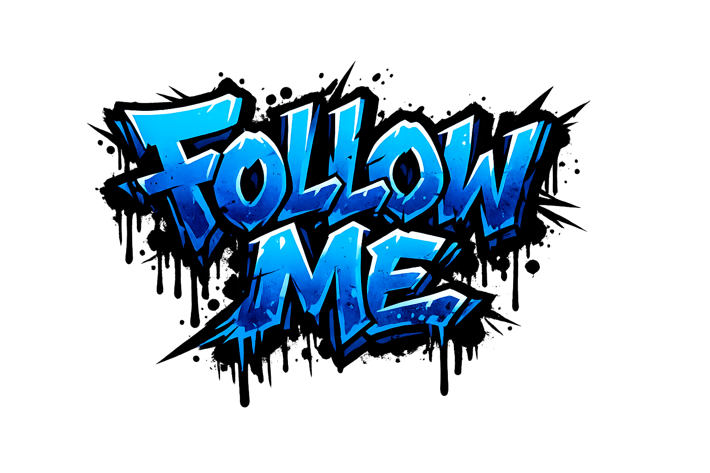

I grew up with the sounds of reggae, soul, and R&B always in the air—that was my first education in rhythm and bass. By 14, I’d found my own path and started DJing, a passion that consumed me for the next decade and a half.
I came up in the early 90s when jungle and happy hardcore were underground in every sense. Back then, it wasn’t about the 'brand'—it was about the mission. I remember walking miles across Sheffield just to get a one-hour slot on Fantasy FM, or designing our own flyers in IT class and sneaking around to plaster them all over the school walls. We’d carry every bit of gear we owned on foot just for a chance to play a youth club set.
Around the age of 28, that energy shifted. I found an even deeper passion for production and songwriting—moving from playing tracks to actually building them. I started out on Reason, but once a friend introduced me to Ableton Live, everything clicked.
My production style today is a direct reflection of those roots: jungle, hardcore, and garage, but stripped of all the unnecessary gloss. I’m not interested in trends or filler. I make functional, sound-system music—heavy, raw, and built specifically for dark rooms and loud systems.
Underground by design. Made to be felt.


